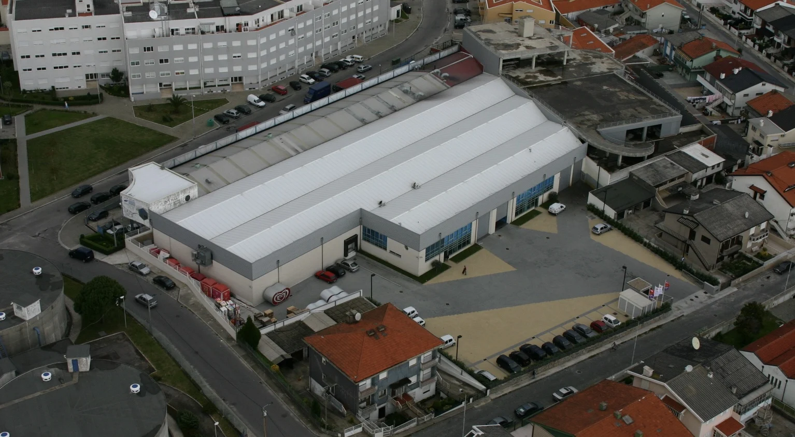

Do frio
para a sua oferta.
Gelados, padaria, pastelaria e pescado.
Explorar categoriasRetalho e Horeca · desde 1988
Produtos alimentares, marcas e uma equipa em Custóias para acompanhar o seu negócio.

O que procura para o seu negócio?
Dos congelados aos produtos de despensa, explore as famílias publicadas pela Mateus & Martins.
Gelados, padaria, pastelaria e pescado.
Explorar categoriasMolhos, caldos, azeites, snacks, doçaria e chás.
Explorar categoriasConheça as marcas apresentadas no catálogo da empresa.
Conhecer as marcasDistribuição alimentar
Uma empresa de distribuição alimentar que trabalha com o retalho tradicional e o canal Horeca desde 1988.
Conhecer a distribuição
Já é cliente?
O Meu Mercado é a plataforma de encomendas ligada no website oficial da Mateus & Martins.
Abre a plataforma externa existente. O acesso e as encomendas são tratados nesse serviço.